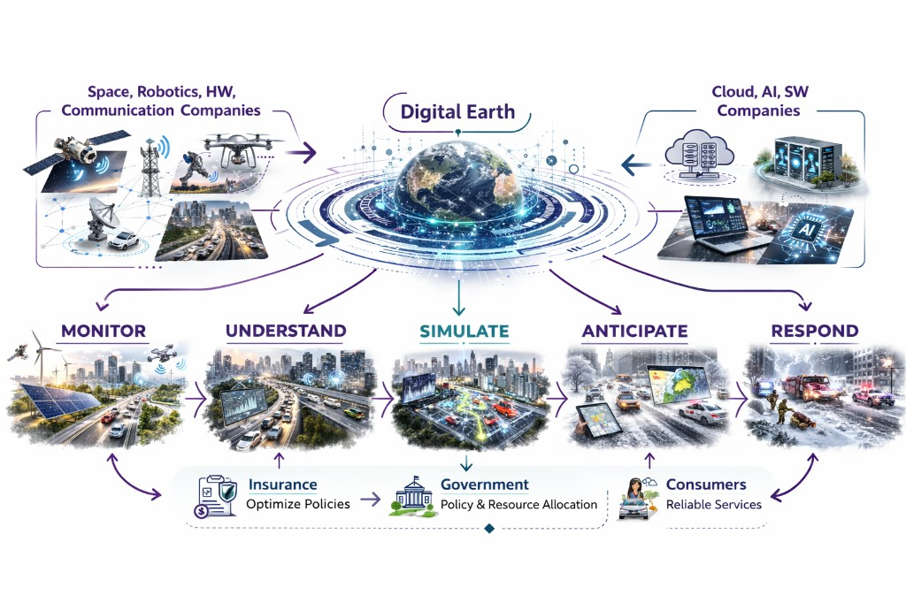
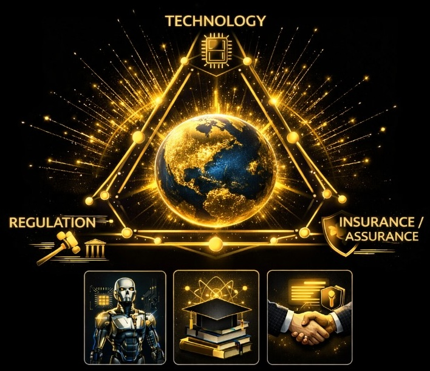
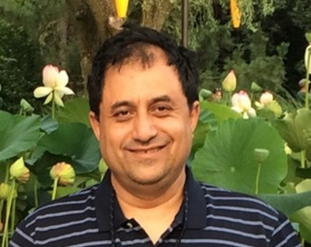
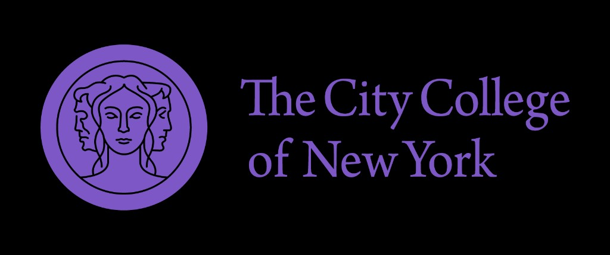

Digital-Earth treats the planet as a shared, evolving model: wide-area sensing from space meets street-level truth from robots, vehicles, and IoT. Together they give planners and communities a picture that stays current—not a static globe, but infrastructure for decisions.
Ethical embodied-AI is how that model stays usable and accountable: learning and acting with governance, safety, and fairness—not scale alone.
Climate stress, aging infrastructure, and rapid AI adoption make urban assurance a large, shared problem: no single field owns it. EARS-CONN is deliberately transdisciplinary, so engineers, earth scientists, insurers, planners, and policymakers debate sensing, models, and ethics in one program rather than in parallel silos.
EARS-CONN brings researchers, builders, insurers, and city stakeholders together to connect those layers for smarter, more resilient cities. Roots of the idea reach back to the 1990s Digital Earth vision and early NASA globe visualizations; today’s digital twins and embodied sensing extend that path. Further reading: NASA SVS, The Digital Earth (1999); ASME on digital twins for Earth.
The program takes a transdisciplinary view of a system-scale challenge: linking science, engineering, finance, and governance so evidence moves from sensors to decisions without losing accountability. One thread across talks and panels: embodied-AI plus sensing infrastructure supplies the data and policy hooks for a living Digital-Earth: urban twins that support ethical, measurable sustainability assurance.
Simulate before you build. Digital-Earth lets planners stress-test zoning, mobility, and infrastructure with grounded data—not slide decks alone.
Fuse orbit and street level. Satellites watch regions; embodied-AI fills the urban canyon—floods, heat, and structural risk seen together.
From feeds to decisions. Open pipelines and ethical AI close the loop between what we sense, what models infer, and what residents need.
Hyper-local risk needs ground truth. Orbit sees patterns; robots and street data capture facades and drainage—together enabling fairer premiums and faster, auditable claims.
The sensing stack for Digital-Earth: ground robots, drones, AVs, and satellites feeding one urban model that stays current.
Stress-test scenarios on digital twins; pair orbit-wide hazard views with property-level detail so premiums and claims stay tied to evidence.
Standards, open data, and federated AI so Digital-Earth is not only for capitals with big budgets.

Wide-area mapping for flood, climate, and resilience views—yet dense cities need more than nadir pixels; gaps drive the embodied-AI layer next door.
Ground-truth inside the canyon: roofs, façades, drainage, and micro-topography—paired with orbit for a complete urban picture and faster response.

Safety, certification, and rules of the road so automation stays transparent and fair in public space.
Proactive risk: fuse orbit with street-level twins for property-level scoring—simulations on real geometry, not zip-code averages.
NYC 2040 — A Long-Term Vision for Embodied-AI, Digital-Earth, and Resilient Urban Infrastructure
Where We Are Now — Gaps, Progress, and the Social Benefit Case for Digital-Earth in NYC
Building It Out — How Satellites, Embodied-AI, and AI Create Digital-Earth for Safer Cities
Environmental Intelligence in Action — Digital-Earth Use Cases for Insurance, First-Responders, and Urban Resilience
Robotics Research Scientist, Nokia Bell Labs
Event registration — Keynotes, panels, and poster sessions on Digital-Earth infrastructure and ethical embodied-AI for cities.
Workshop registration — Hands-on tracks (days 3–4): data fusion, stacks, and challenge presentations.
Abstract & short paper — Submit for poster presentation. Peer reviewed.
Innovation challenge — Peer-reviewed ideas at the intersection of embodied-AI, remote sensing, and Digital-Earth; awards and sponsorships possible.
Days 1–2 are one plenary track for builders and stakeholders: keynotes, panels, meals, and discussion. Times are provisional. Session titles below are fixed; speakers and panelists will be announced.
Day 1 — Aug 24
Talks & Panels
Single plenary track · Keynotes · Panels · Posters
Day 2 — Aug 25
Talks & Panels
Single plenary track · Keynotes · Panels · Posters
Day 3 — Aug 26
Hands-On Workshop
AV stack · Data fusion · Hackathon
Day 4 — Aug 27
Hands-On Workshop
Challenge presentations · Awards · Closing
One plenary program interleaving governance, insurance, and assurance with data infrastructure, sensing, and embodied-AI — reserved blocks below keep keynotes, panels, meals, and discussion time for the whole community on both days.
Day 1 — schedule (titles fixed; speakers TBA)
Day 2 — schedule (titles fixed; speakers TBA)
Click a card to view full bio and affiliation.

Chair & Professor of Electrical Engineering, CCNY, CUNY.

NOAA Chair Professor of Civil Engineering, CCNY, CUNY.
Professor, Electrical Engineering, CCNY.

Professor, Civil Engineering, CCNY.

Research Professor, CCNY and NYU.

Deputy Executive Director of Operations – UNU Hub, CCNY.
Deputy Director, Leadership — NOAA Cooperative Science Center at CCNY; Director, CUNY CREST HIRES program.
Distinguished Research Scientist, NOAA-CESSRST at CCNY; Senior Scientist, NOAA NESDIS.
Assistant Professor of Computer Science, University of Hull.
Industry Assistant Professor, NYU.
Our sponsors believe in a safer, smarter, and more resilient New York City — and make this vision possible. We are grateful for their commitment to the future of our communities.
